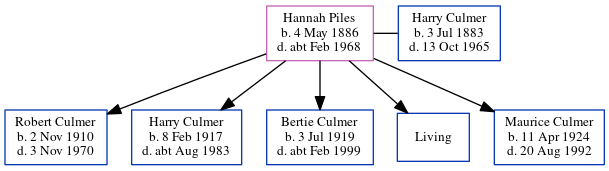

Hannah Elizabeth Ellen Culmer (née Piles) 1886 - c1968
[ Home ] | [ Calendar ] | [ Surnames Index ] | [ Census Index ] | [ Family History ]Hannah Piles, the wife of Harry Robert Culmer (the second cousin twice-removed on the mother's side of Nigel Horne), was born in Ashford, Kent, England on May 4, 18861,2,3 and married Harry (a locomotive driver southern railroad with whom she had 5 children: Robert Nigel Charles, Harry Ronald, Bertie Charles J, Sydney John R and Maurice Stanley Allan, along with 1 surviving child) at St Michael & All Angels Church, Throwley, Kent, England on Oct 24, 19085.
During her life, she was living at 3 Cambridge Road, Faversham, Kent on Apr 2, 19111; and at 79 St Marys Road, Faversham, Kent on Sep 29, 19392.
She died c. Feb 1968 in Canterbury, Kent, England4.
Children
- Robert Nigel Charles was born on Nov 2, 1910
- Harry Ronald was born on Feb 8, 1917
- Bertie Charles J was born on Jul 3, 1919
- Maurice Stanley Allan was born on Apr 11, 1924
Citations
- 1911 Census for England & Wales - Findmypast (was age 24 and the wife of the head of the household)
- 1939 Register - Findmypast (was the wife of the head of the household)
- England & Wales births 1837-2006 - Findmypast
- England & Wales deaths 1837-2007 - Findmypast
- England & Wales Marriages 1837-2005 - Findmypast
Media
1911 Census for England & Wales - GBC/1911/RG14/04391/0549/2
1939 Register - TNA-R39-1715-1715H-016-32
England Marriages 1538-1973 - R_848383853/2
England & Wales marriages 1837-2005 - BMD/M/1908/4/AZ/000298/167
England & Wales births 1837-2006 - BMD/B/1886/2/AZ/000461/210
England & Wales deaths 1837-2007 - BMD/D/1968/1/AZ/000259/005
Kent Marriages And Banns - GBPRS-CANT-M-94044488-2
Family Tree
Generated by ged2site. Last updated on Jun 11, 2024